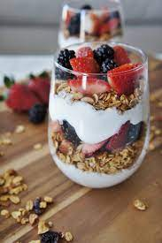

Grilled Salmon with Avocado Salsa
Ingredients:
- 4 salmon fillets
- 1 tablespoon olive oil
- Salt and pepper, to taste
- 2 ripe avocados, diced
- 1 small red onion, finely chopped
- 1/4 cup fresh cilantro, chopped
- Juice of 1 lime
Instructions:
- Preheat grill to medium-high heat.
- Brush salmon fillets with olive oil and season with salt and pepper.
- Grill salmon for 4-5 minutes per side or until cooked through.
- In a bowl, combine diced avocados, red onion, cilantro, and lime juice. Mix well to make the salsa.
- Serve grilled salmon topped with avocado salsa.
Quinoa and Vegetable Stir-Fry
Ingredients:
- 1 cup quinoa, rinsed and cooked
- 1 tablespoon olive oil
- 1 onion, chopped
- 2 cloves garlic, minced
- 1 red bell pepper, sliced
- 1 yellow bell pepper, sliced
- 1 zucchini, sliced
- 1 cup broccoli florets
- 1/4 cup low-sodium soy sauce
- 1 tablespoon honey
- 1 teaspoon grated fresh ginger
- Sesame seeds, for garnish
Instructions:
- Heat olive oil in a large skillet over medium-high heat.
- Add onion and garlic, and sauté until translucent.
- Add bell peppers, zucchini, and broccoli. Stir-fry until vegetables are tender yet crisp.
- In a small bowl, whisk together soy sauce, honey, and grated ginger.
- Add cooked quinoa to the skillet and pour the sauce over. Stir to combine.
- Cook for an additional 2-3 minutes, allowing the flavors to meld.
- Garnish with sesame seeds and serve hot.
Baked Chicken Breast with Roasted Vegetables
Ingredients:
- 4 boneless, skinless chicken breasts
- 2 tablespoons olive oil
- 1 teaspoon paprika
- 1 teaspoon garlic powder
- 1 teaspoon dried thyme
- Salt and pepper, to taste
- 1 lb mixed vegetables (such as carrots, bell peppers, and Brussels sprouts), chopped
Instructions:
- Preheat oven to 375°F (190°C).
- Place chicken breasts on a baking sheet. Drizzle with olive oil and sprinkle with paprika, garlic powder, dried thyme, salt, and pepper.
- In a bowl, toss mixed vegetables with olive oil, salt, and pepper.
- Arrange vegetables around the chicken on the baking sheet.
- Bake for 20-25 minutes or until chicken is cooked through and vegetables are tender.
- Serve hot.
Veggie and Hummus Wrap
Ingredients:
- Whole-grain tortillas
- Hummus
- Sliced cucumbers
- Sliced red bell peppers
- Sliced avocado
- Baby spinach or arugula
Instructions:
- Lay out a whole-grain tortilla.
- Spread a generous amount of hummus over the tortilla.
- Add slices of cucumbers, red bell peppers, avocado, and a handful of baby spinach or arugula.
- Roll up the tortilla, cut in half, and serve as a nutritious wrap.

Greek Yogurt and Berry Parfait
Ingredients:
- 1 cup Greek yogurt
- 1 cup mixed berries (such as strawberries, blueberries, and raspberries)
- 2 tablespoons honey
- Granola, for layering
Instructions:
- In a glass or bowl, layer Greek yogurt, mixed berries, and a drizzle of honey.
- Repeat the layers until the glass is filled, ending with a dollop of Greek yogurt on top.
- Sprinkle granola over the yogurt layer.
- Serve immediately as a healthy and satisfying dessert or breakfast.